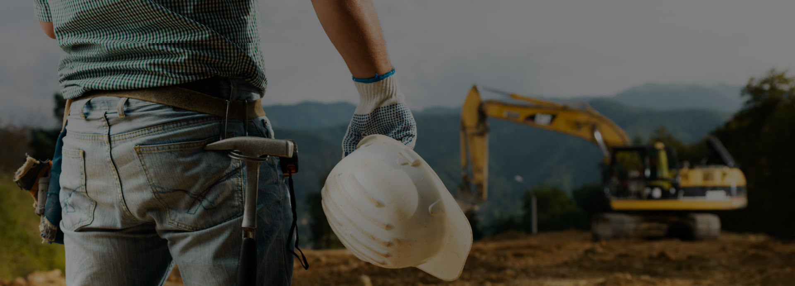

-

-

-

- 
Voor een uitgebreid advies staan wij u graag persoonlijk te woord in onze showroom. Wij zijn te bezoeken tijdens de openingstijden of na telefonische afspraak.
U bent van harte welkom!
Aypen is het adres bij uitstek voor wie op zoek is naar een nieuw interieur, advies over aanbouw, renovatie of vernieuwbouw. Aypen levert maatwerk, ongeacht de grootte van de klus. Het bedrijf heeft veel ervaring met aannemerswerkzaamheden, maar beschikt aan de Lange Beijerd 7a in Cuijk ook over een moderne showroom waar u terecht kunt voor een breed assortiment producten en artikelen voor uw woning, badkamer en/of keuken.
Kwaliteit, duurzaamheid en schoonheid vormen de drie pijlers onder Aypen. Dat vertaalt zich in een hoogwaardige en persoonlijke service. Logisch, want een investering in uw woning is niet zomaar iets. Als u uw woning gaat veranderen, wilt u kunnen kiezen voor producten en materialen die bij u passen, waar u zich prettig bij voelt en waar u elke dag met trots naar zult kijken. Aypen denkt graag met u mee en draagt bij elke klus zorg voor advies op maat, zodat uw woning of interieur de uitstraling krijgt die bij u past: een gevoel van thuiskomen elke dag weer.
Aypen levert en plaatst kozijnen, deuren, schuifpuien, serres, veranda's, zonweringen en dakkapellen. Aypen geldt tevens als de allround specialist in het Land van Cuijk en de kop van Noord-Limburg op het gebied van sanitaire voorzieningen, led verlichting, installatiematerialen, tegels en vloerverwarming.
Daarnaast biedt Aypen ongekende mogelijkheden voor elke aanbouw, verbouwing en renovatie. Dankzij een jarenlange ervaring en een vast team medewerkers heeft Aypen een creatieve en betaalbare oplossing voor al uw wensen. Aypen voorziet in professioneel en gedegen bouwadvies op basis van uw specifieke situatie - van kleine klus tot aannemerswerk. Zo wordt van elk bouwproject een succes gemaakt.
Aypen combineert een hoge kwaliteit aan een goede betaalbaarheid. Op deze website vindt u daarom een handige Berekenhulp voor onze kozijnen, deuren en schuifpuien. Zo kunt u direct zien wat de kosten zijn.